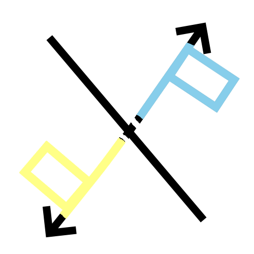

Featured project
Pixel Progression
A collaborative PHP and JavaScript game project with gameplay systems, authentication, saved state, and leaderboard presentation.

Problem
Build a browser-based game experience with account flow, gameplay progression, saved state, and score visibility.
Process
The project package combines frontend gameplay code, PHP routes, login/register flow, save and score handling, and a final presentation explaining the system.
Outcome
The deployable portfolio page exposes only recruiter-safe presentation materials while keeping raw runtime state and private development files out of the webpage repo.